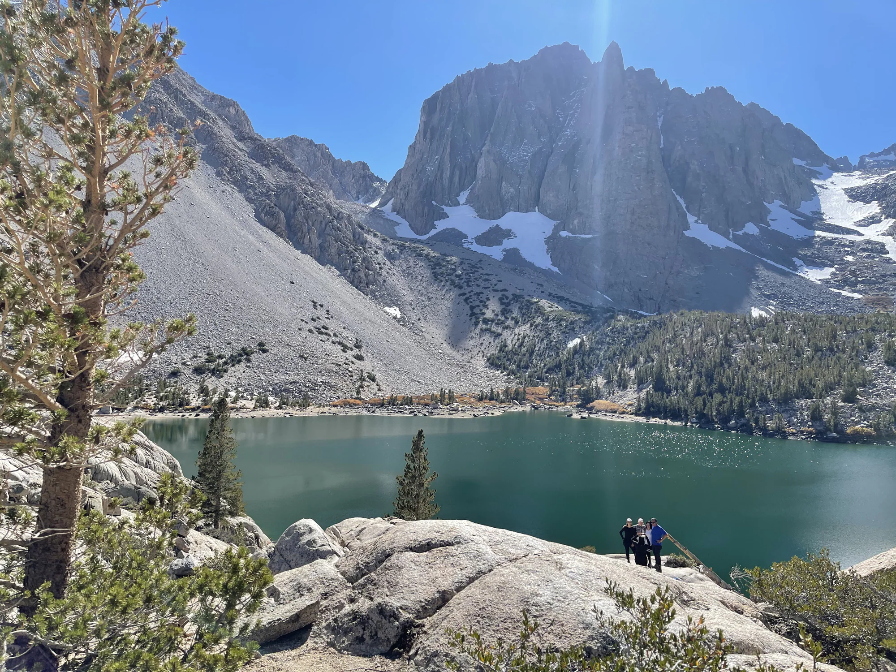
2021—2026 / A PERSONAL EDIT
The Best of
Five Years.
Five years of looking closely, showing up, and working hard—distilled into the photographs worth keeping close.
01 / THE COLLECTION
Light, weather,
and wild places.
Chosen from years of photographs for atmosphere, craft, feeling, and the story each frame can hold on its own.
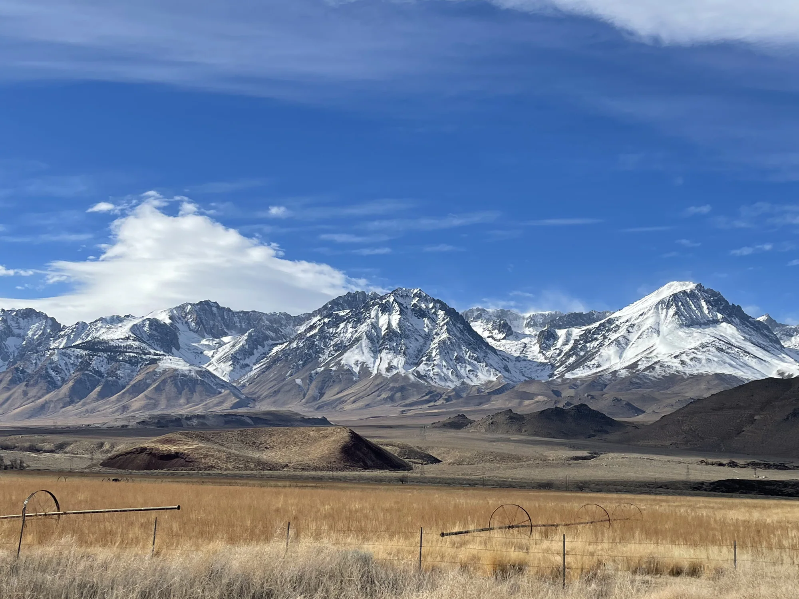
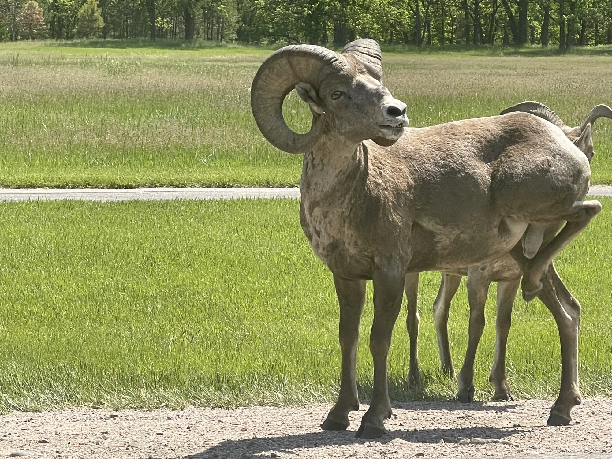
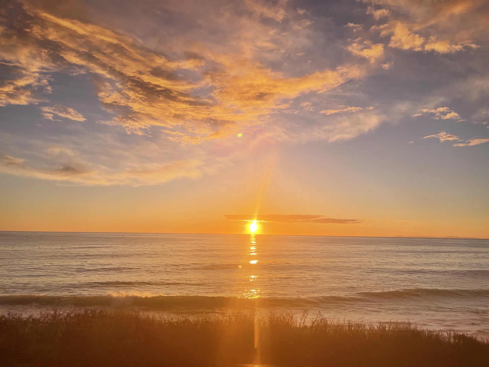
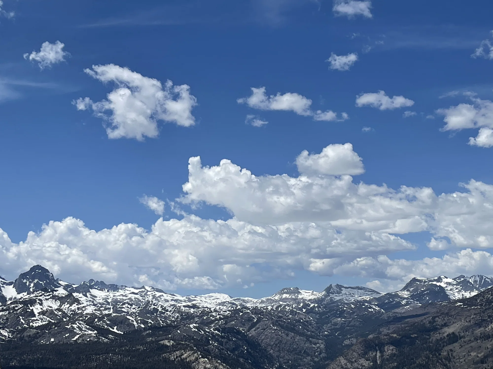
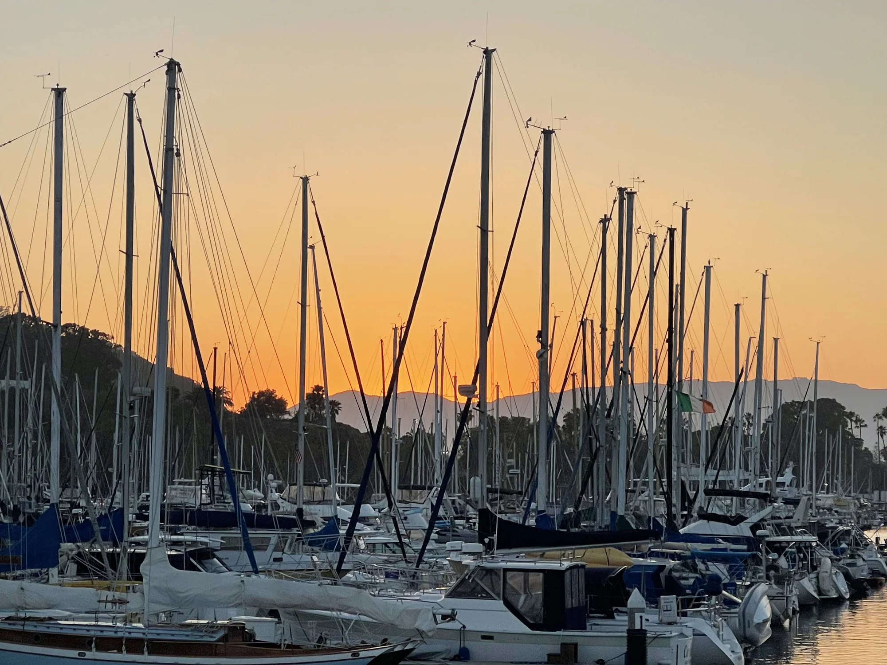
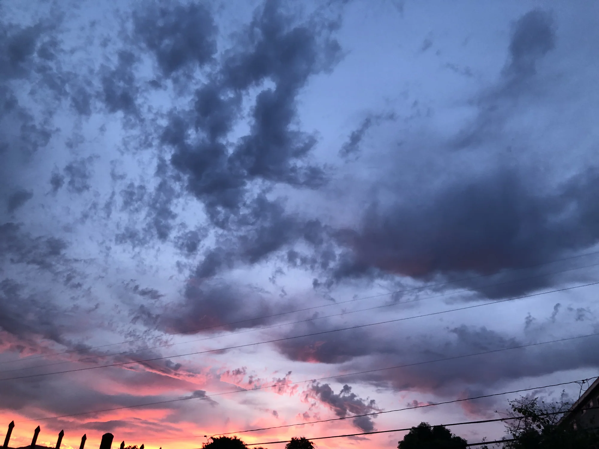
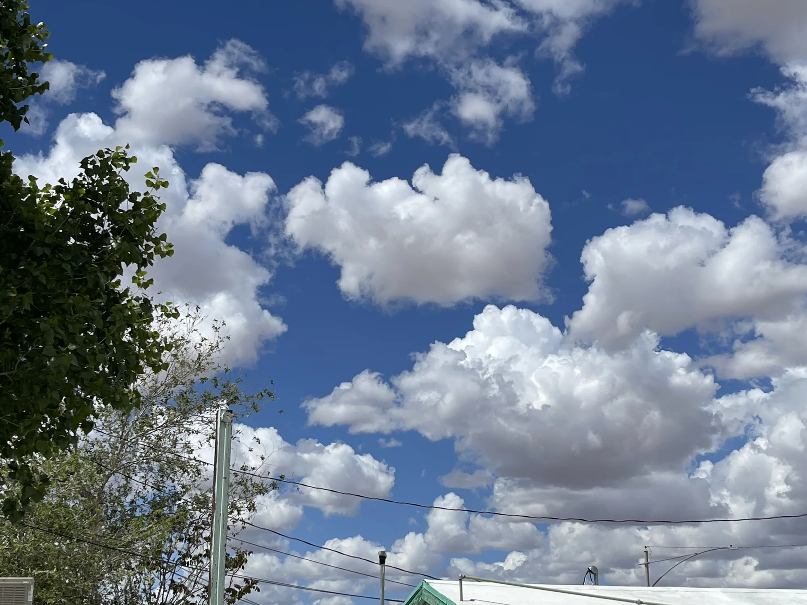
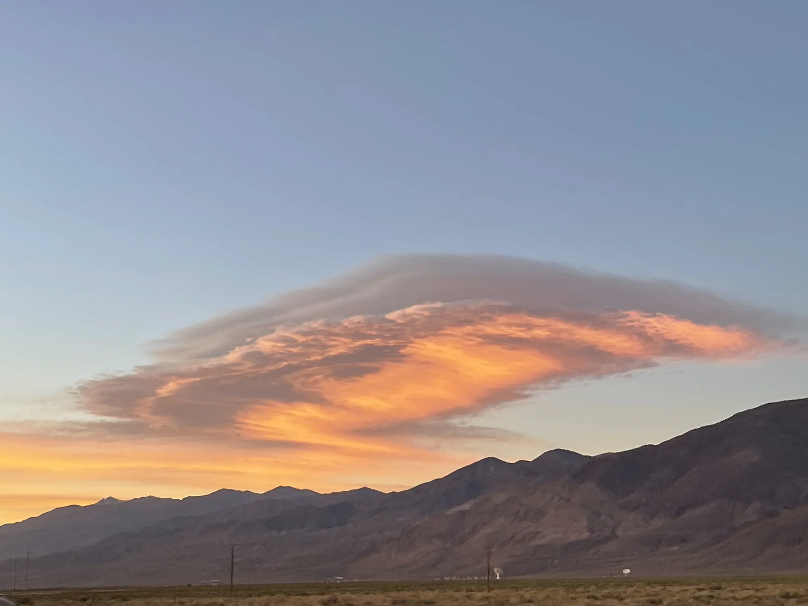
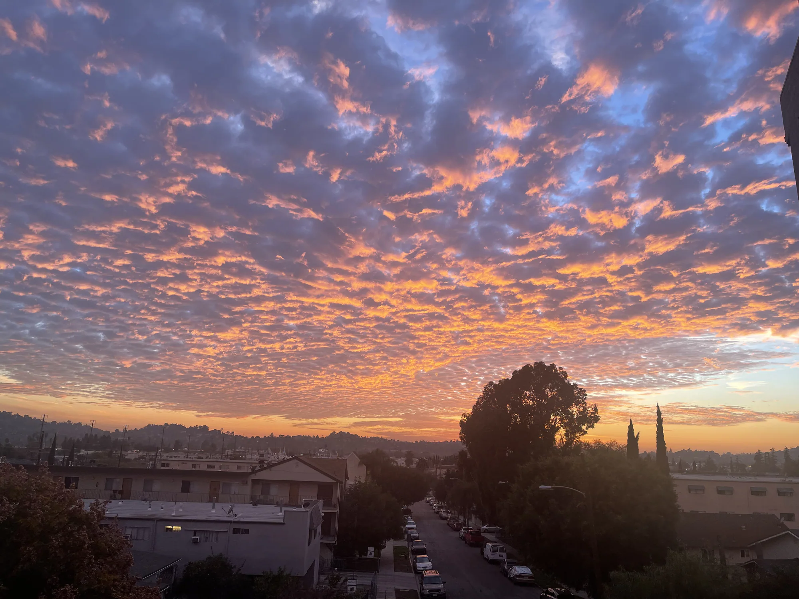
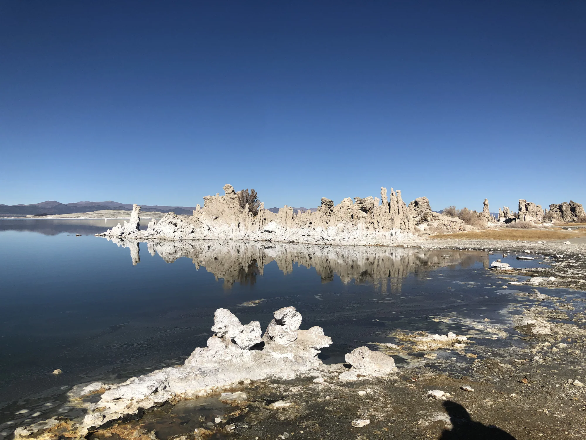
02 / THE EDIT
Technology helps sort.
Eric makes the choice.
A private local selection agent finds strong frames, near-duplicates, and overlooked moments. Every final photograph is reviewed by hand. Originals stay private; only approved work reaches this collection.
★ Awesome● Just OK× Pass→ Publish the best